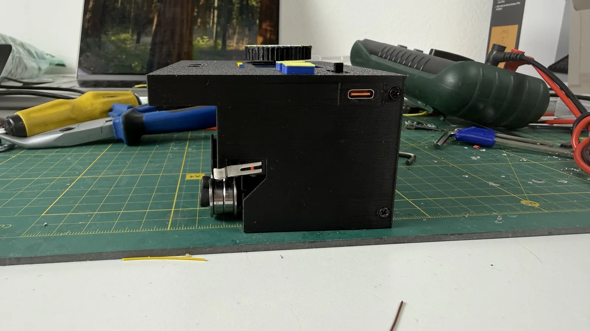
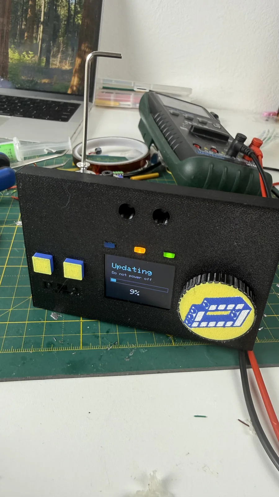
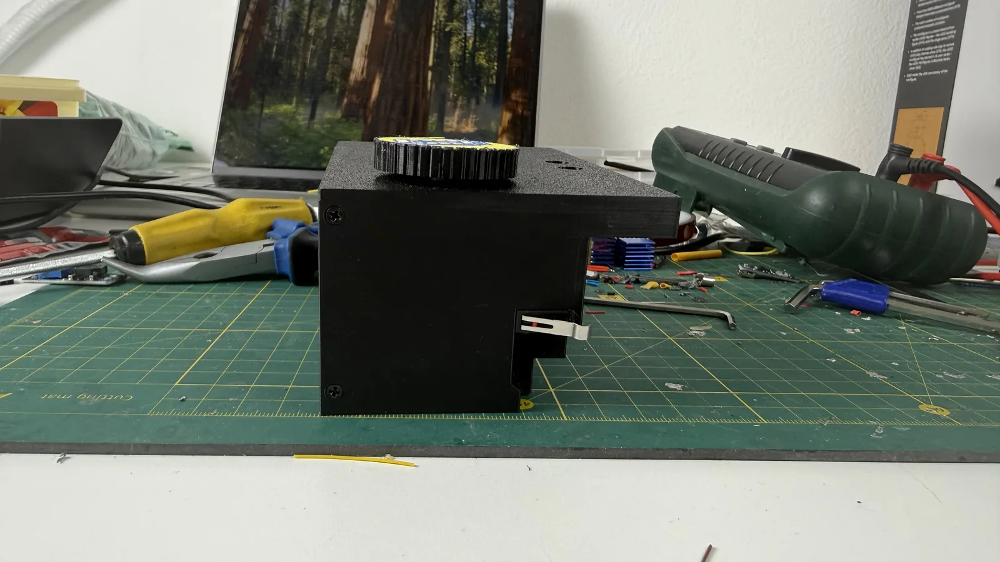
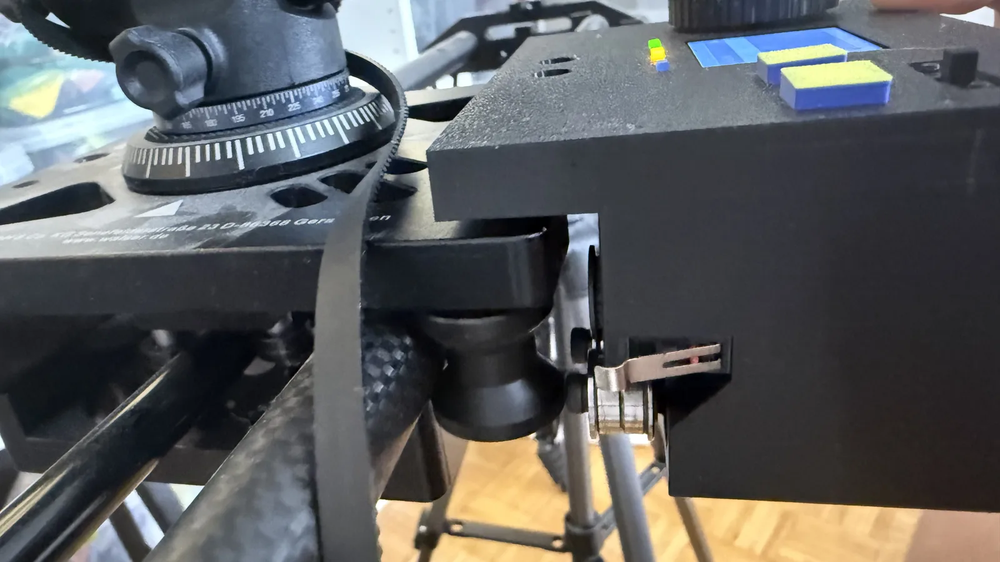
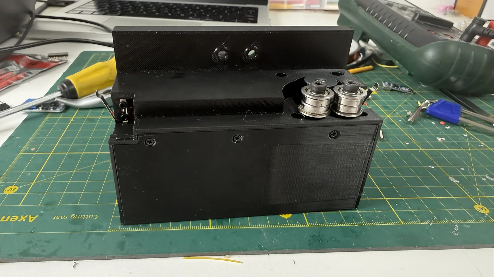

← все заметки
11.08.2026#слайдер #3д-печать
Я думал, что сегодня будет пост о том, как я закончил сборку слайдера. Но, увы, судьба распорядилась иначе.
Закончил сборку корпуса, установил все компоненты, починил одно место обрыва, закрыл крышку.
Один раз словил баг с прошивкой, и пришлось разобрать корпус, чтобы перепрошиться по проводу. Но в целом прошивка уже нормально устанавливается по воздуху.
Все базовые тесты прошёл и пошёл ставить всё это на слайдер, желая сегодня хотя бы примерить.
И тут выяснилось, что я не учёл вылет роликов: ролики, которые обеспечивают обхват шкива ремнём, упираются в ролики самой каретки слайдера.
Никакого быстрого фикса здесь пока не видится. Да, я заменил массивные винты на менее массивные, но всё равно нескольких миллиметров не хватает для комфортного использования.
Потенциальных решения я вижу два.
Первое — нарастить корпус. Например, срезать часть старого корпуса, вклеить и закрепить на винты вставку, которая позволит сместить корпус относительно слайдера на несколько миллиметров.
Второй вариант более радикальный — полностью переработать корпус. То есть сместить куда-то шаговый мотор и уже начать разбираться с тем, как более аккуратно всё это разместить.
Минус в том, что придётся сейчас всё разбирать обратно: отковыривать кучу клея, отпаивать кучу проводов, а потом всё это пересобирать. Этот вариант мне нравится тем, что я смогу навести внутри корпуса порядок, но не нравится тем, что на переработку уйдёт очень уж много времени, а готовый слайдер хочется уже сейчас.
Как будто бы есть и промежуточный вариант между этими двумя: не упарываться с разработкой нового суперкорпуса, а просто добавить недостающие элементы в текущий корпус, немного увеличить его вылет и уже, отталкиваясь от этого, продолжать работать.
Ну а порядок внутри корпуса всё равно придётся навести, но хотя бы без какого-то глобального перепроектирования.
Закончил сборку корпуса, установил все компоненты, починил одно место обрыва, закрыл крышку.

Один раз словил баг с прошивкой, и пришлось разобрать корпус, чтобы перепрошиться по проводу. Но в целом прошивка уже нормально устанавливается по воздуху.

Все базовые тесты прошёл и пошёл ставить всё это на слайдер, желая сегодня хотя бы примерить.

И тут выяснилось, что я не учёл вылет роликов: ролики, которые обеспечивают обхват шкива ремнём, упираются в ролики самой каретки слайдера.

Никакого быстрого фикса здесь пока не видится. Да, я заменил массивные винты на менее массивные, но всё равно нескольких миллиметров не хватает для комфортного использования.
Потенциальных решения я вижу два.
Первое — нарастить корпус. Например, срезать часть старого корпуса, вклеить и закрепить на винты вставку, которая позволит сместить корпус относительно слайдера на несколько миллиметров.
Второй вариант более радикальный — полностью переработать корпус. То есть сместить куда-то шаговый мотор и уже начать разбираться с тем, как более аккуратно всё это разместить.

Минус в том, что придётся сейчас всё разбирать обратно: отковыривать кучу клея, отпаивать кучу проводов, а потом всё это пересобирать. Этот вариант мне нравится тем, что я смогу навести внутри корпуса порядок, но не нравится тем, что на переработку уйдёт очень уж много времени, а готовый слайдер хочется уже сейчас.
Как будто бы есть и промежуточный вариант между этими двумя: не упарываться с разработкой нового суперкорпуса, а просто добавить недостающие элементы в текущий корпус, немного увеличить его вылет и уже, отталкиваясь от этого, продолжать работать.
Ну а порядок внутри корпуса всё равно придётся навести, но хотя бы без какого-то глобального перепроектирования.
Комментарии